Functional analysis¶
Gene Ontology¶
Different types of analyses using Gene Ontology (GO) can be performed on validated protein lists. The GO project provides a controlled vocabulary of terms for describing gene products such as proteins. For more details, see the GO website. A GO analysis can regroup proteins into standardized categories of terms belonging to 3 domains: Biological Process, Cellular Component and Molecular Function.
In myProMS, all GO analyses need 2 types of GO files that are managed from GO files management section (See corresponding chapter below for more information) :
- Ontology file: the file that contains all term descriptions and their relationships between each other
- Annotation file: the file that maps each protein identifier to the most specific terms that characterize the protein.
GO summary¶
The GO summary tool can be used to simply regroup proteins sharing common GO terms.
This tool can be run from the option frame on any project item, by clicking on the Gene Ontology summary button. The following form is then displayed:
| Ontology | The file containing terms that will be used to regroup proteins |
| Annotation | The file containing protein annotations to GO terms |
| Domain | Select one of the 3 GO domains the analysis will be focused on |
| Depth | Only terms at the specified depth in the GO graph structure will be used. Depth is calculated by counting the distance between a term and the root term of the corresponding ontology domain. If a high depth is selected, a very large number of terms will be displayed and the results may be difficult to read |
| Minimal protein per term (Optional) | If a selected term contains less proteins that this specified value, this term will be ignored and the matching proteins will be added to the “Other” category |
Click on Display to launch the process. After a short calculation time, results are displayed as shown in the example below:
An interactive bar plot shows each term frequency. Click on a bar to display the proteins mapped to the corresponding term. Each protein group can also be viewed by browsing the list of terms displayed below the plot.
GO enrichment analysis¶
Enrichment analysis is performed to determine which GO terms are significantly enriched in a tested set of proteins when compared with a given background set (eg. the whole proteome of the species studied). All terms will be tested regardless of their depth.
In myProMS, GO enrichment analysis is calculated with the GO::TermFinder package developed for perl[1]. Briefly, a p-value using a hypergeometric distribution is computed to determine whether any GO terms annotate a specified list of proteins at a frequency greater than that would be expected by chance. Multiple hypothesis correction is available with FDR computing.
This tool is accessible by clicking on an experiment and selecting the Start GO Analysis button in the option frame. The following form in then displayed:
| Name | Provide a name for the enrichment analysis. The analysis is saved and can be retrieved by this name in the GO analyses tree displayed in the sub-navigation frame | |
| Description (Optional) | Description of the current analysis | |
| Ontology file | The file containing term relationships | |
| Domain(s) | Select one or more domains to test | |
| Advanced parameters (Optional) | Estimated number of proteins in organism | If the background population consists of the whole proteome (more exactly the whole protein set contained in the annotation file), this value can be set to calculate properly the enrichment ratio of GO terms in the tested protein set(s), supposing that the annotation file is incomplete. This option artificially adds unannotated proteins to the background |
| Background population | Select the population to which the tested protein set will be compared. A previously built custom list can be selected, or a local file can be used instead. This file must contains all protein identifiers that compose the background (1 identifier per row). These identifiers must match the ones contained in the annotation file. If selected background is set to “Unspecified”, the whole protein set contained in the annotation file will be used as background. In this case, be sure that the annotation file contains only proteins from the current species. This can be considered as a whole proteome background if the annotation has a very good coverage of current species proteome. The background population selection strongly affects the significance of terms and must be chosen carefully and coherently with your biological question | |
| Statistical settings | These settings can be set to control the significance cut-off of GO terms. False Discovery Rate (FDR) or p-value criteria can be selected. | |
| Show non-significant terms in graph | If this option is disabled, non-significant terms will be represented with small dots in graphical view. This can increase significantly the visibility of the graph if the dataset contains a large number of significant terms | |
| Include only proteins with at least n peptide(s) | Proteins which contains less peptides than the value specified will be excluded from the tested set | |
| Select a protein set | Select the protein set to be tested. It can be selected from any project item or custom list | |
Once all parameters have been set, click on Start Analysis. The computation may last several minutes depending on the sizes of the protein sets being compared.
The results are directly displayed after the process but can also be accessed later on by selecting the analysis name in the GO analyses tree displayed in the sub-navigation frame.
For each domain, results can be displayed in 3 different views accessible at the top of the page:
- Cloud view: Highly significant terms (low p-value) are represented with a large font, and less significant terms with a small font. The proteins mapped to a term can be listed by clicking and each term.
- Table view: More details can be viewed in table format which contains the p-value and enrichment ratio of each term.
- Graph view: Displays a graph of the significant terms as nodes with their relationships as edges. Each node colour is based on the corresponding term’s p-value significance. Proteins that are mapped to a term can be viewed by clicking on the corresponding node.
Quantitative gene enrichment analysis¶
When a quantification is available, a quantitative gene enrichment analysis can be performed as it was originally done for SILAC experiments[2].
The quantified proteome is divided into five bins corresponding to log2 ratios or bin proportion. Enrichment of GO terms in each bin is then calculated compared to a provided background and a cluster analysis allow to visualize a heatmap of enriched GO-terms in all bins.
Here is how you should proceed to do it.
This option is accessible by clicking on an experiment and selecting the Start Q. GO Analysis button in the option frame. After loading a protein set of an Analysis or a Design related quantification, you need to select the parameters in the following form:
| Name | Provide a name for the enrichment analysis. The analysis is saved and can be retrieved by this name in the GO analyses tree displayed in the sub-navigation frame | |
| Description (Optional) | Description of the current analysis | |
| Ratio | Choose the ratio considered for the enrichment in the quantitation (like heavy/medium or heavy/light for SILAC experiments). | |
| Peptides (Optional) | Make a threshold upon the number of peptides used to compute the ratio | |
| Protein-ratio p-value threshold | Make a selection on the associated p-value of the ratio | |
| Ontology file | The file containing term relationships | |
| Annotation | The file containing protein annotations to GO terms | |
| Domain | Select one domain to test | |
| Advanced parameters (Optional) | Background population | Select the population to which the tested protein set will be compared. See GO enrichment analysis section for custom list recommendations |
| Enrichment test statistical settings | These settings can be set to control the significance cut-off of GO terms. False Discovery Rate (FDR) or p-value criteria can be selected | |
When the enrichment is done, you can get information of the GO-Analysis by clicking on the sub-navigation frame the item generated and Summary.
Click on the Heatmap button to see the output you can get:
Each row represent a GO-Term and each cell is the -log10 of the p-value of the enrichment test for the GO-Term in the specific bin (put to 1 and then log-transformed to 0 if that ontology is not enriched/significant in the bin).
Each line is z-scored. Then, these z-scores are clustered by one-way hierarchical clustering using the function hclust in R (the distance function used is euclidean and the agglomeration method used is average).
Note
The heatmap is interactive and can be exported as a jpeg image. Clicking on a cell updates the frame and provides the list of proteins containing the annotated GO-Term in the bin.
| [1] | GO::TermFinder package : Boyle et al., Bioinformatics, 2004 |
| [2] | Quantitative GO SILAC : Pan C et al, MCP, 2009 |
Pathway enrichment¶
Pathway is the term from molecular biology which depicts an artificial simplified model of a process within a cell or tissue. In bioinformatics research, pathway analysis is used to identify related proteins within a pathway. This is helpful when analyzing any omics dataset with a large number of proteins. By examining the changes in proteins in a pathway, its biological causes can be explored.
Typical pathway model starts with extracellular signaling molecule that activates a specific protein. Thus triggers a chain of protein-protein or protein-small molecule interactions. Pathway analysis helps to understand or interpret omics data from the point of view of canonical prior knowledge structured in the form of pathways diagrams. It allows finding distinct cell processes (cellular processes), diseases or signalling pathway that are statistically associated with selection of differentially expressed proteins between two samples. To do so, myProms uses Reactome’s web-service.
Launch pathway analysis¶
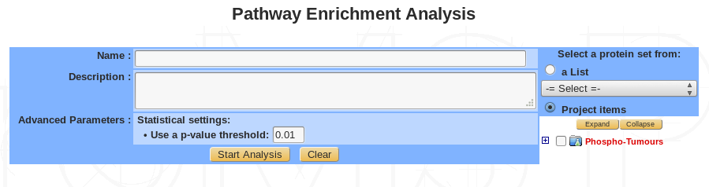| Name | Provide a name for the Pathway analysis. The analysis is saved and can be retrieved by this name in the Functional analyses tree displayed in the sub-navigation frame |
| Description (Optional) | Free text |
| Advanced parameters (Optional) | Set a p-value threshold |
| Select proteins | Select proteins to use in the analysis, from custom list or project item |
Summary / edit / delete¶
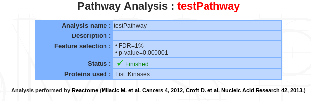If a pathway analysis is selected, a summary of the information available for that analysis is displayed in the mainframe.
Displaying pathway analysis¶
3 different views are available : Cloud, graphical and table view :
Cloud view :
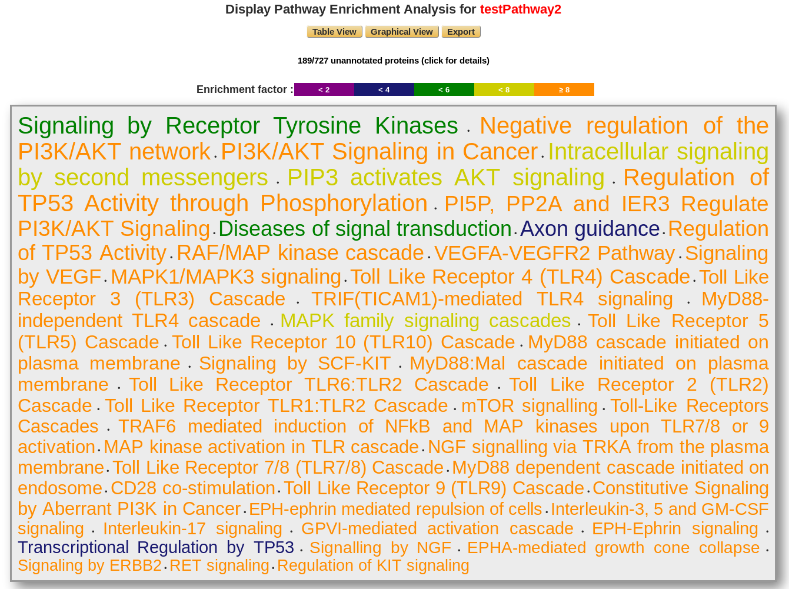The displaying pathway is ordered by p-value. The color corresponds to the enrichment factor value.
Users have access to the unannotated proteins, which does not match with the reactome database.
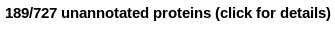 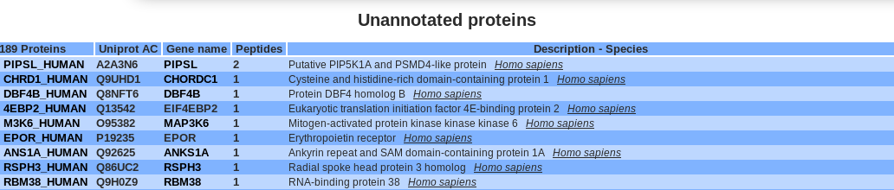Graphical view :
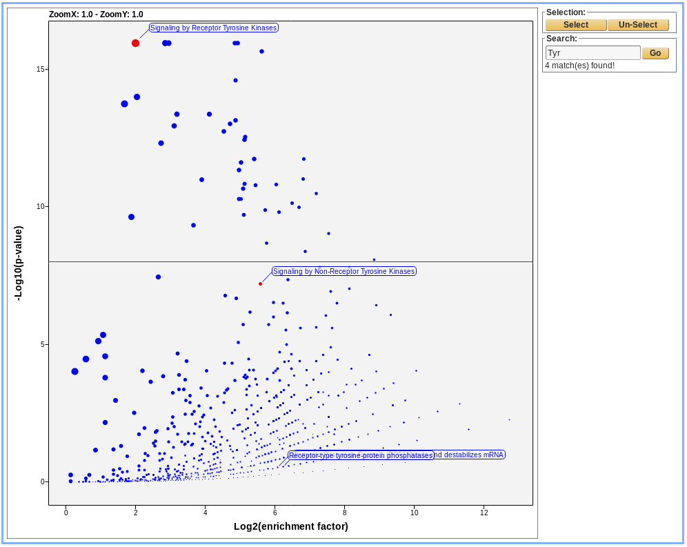 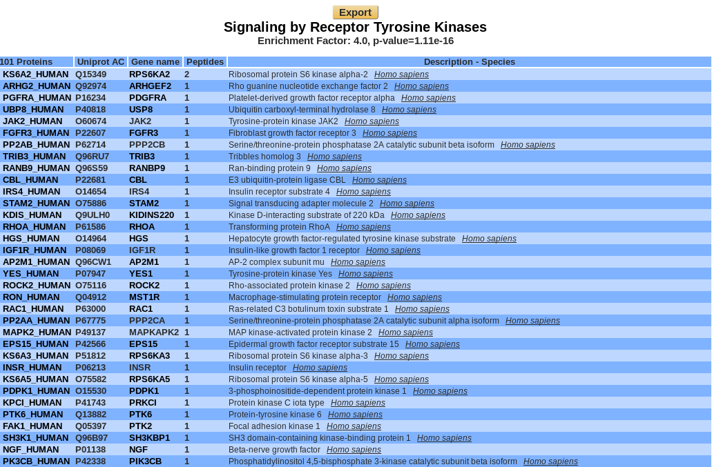Danger
A COMPLETER
Table view :
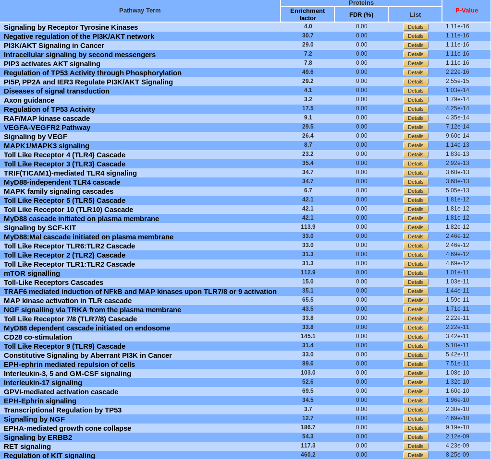By default, pathways are ordered by p-value. They can be sorted by enrichment factor or FDR by clicking the corresponding name. A pathway can be display in Reactome by clicking on its name.
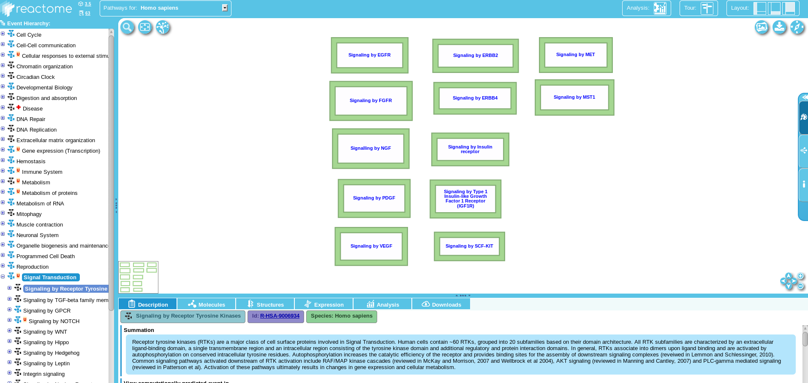Export¶
An excel file can be downloaded which correspond to the table view information.
Motif enrichment analysis¶
Motifs are recurring short sequence elements. Their over-representation usually implies some functional significance. myProMS uses rmotifx R package for the enrichment analysis and ggseqlogo R package for drawing the motif.
Launch analysis¶
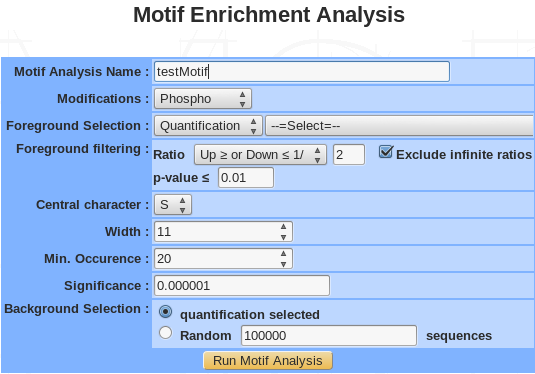- Name: provide a name for the PCA and/or the clustering analysis. The analysis is saved and can be retrieved by this name in the Exploratory analyses tree displayed in the sub-navigation frame.
- Modification: choose the type of modifications (phosphorylation, acetylation, methylation….).
- Foreground selection: select a quantification or a previously saved list.
- Foreground filtering:
- Ratio: all proteins with a ratio corresponding to the chosen value are kept.
- Infinite ratio: exclude or not.
- p-value: all proteins with a p-value smaller than or equal to the chosen value are kept.
- Central residue: following the type of modifications, the drop down menu is automatically generated. For instance, phosphorylation modification generate 3 type of residue (S, T, Y).
- Width: the width is the number of total characters is the motif. It should be an odd number between 3 and 35. However, choosing a motif width that is too narrow can result in the exclusion of motifs with critical longer-range dependencies and choosing a motif width that is too wide (without adjusting the significance threshold accordingly) can yield spurious motif results.
- Min. occurrence: the occurrence threshold refers to the minimum number of times you wish each of your extracted motifs to occur in the data set. An occurrence threshold of 20 usually is appropriate, although this parameter may be adjusted to yield more specific or less specific motifs. This parameter can be used to tune the specificity of motifs since motifs with greater specificity (i.e., more “fixed” positions) are expected to occur less often than those motifs with lower specificity. Users that wish to extract a maximal number of motifs should set this parameter to a low value (for example, “5”) and rely solely on the significance parameter (see step 8) to extract motifs. On occasion it may be useful to set this parameter as a fractional percent of the total number of modification sites in order to compare motifs with similar specificities across data sets that vary in size (e.g., to compare motifs from data sets of 300 and 3000 sites, one may opt to set the occurrences parameter to 5 and 50, respectively).
- Significance: The significance refers to the P-value threshold for the binomial probability. This is used for the selection of significant residue/position pairs in the motif. t is critical to note that this value does not take into account a correction for multiple hypotheses (such as the Bonferroni correction). On any given motif-x search step there are (number of possible characters at each position) * (number of non fixed positions) hypotheses being tested. For example, in an S-centered analysis of width 15, there would be (20) * (14) = 280 hypotheses tested. To ensure an alpha-value of at least 0.05 by the Bonferroni method, one would need to divide the desired alpha-value by the total number of hypotheses tested (i.e., 0.05/280 = 0.00018).We suggest a threshold of 0.000001 to maintain a low false positive rate in standard protein motif analyses.
- Background selection: The background simply refers to the item from which the data set was taken. This is important for accurate statistical analysis. You may choose the selected quantification or generate a random background sequence based on the probability of each amino acid within the proteome.
Summary/editing/deleting¶
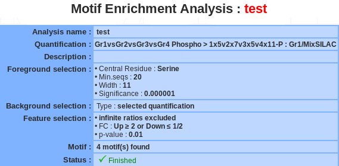If a motif enrichment analysis is selected, a summary of the information available for that analysis is displayed in the mainframe.
The motif name and the description can be modify by clicking the edit button.
The analysis can be deleted by clicking the delete button.
Important
If the motif analysis is involved in a heatmap, you have to delete the heatmap before deleting the motif analysis.
Displaying motif enrichment¶
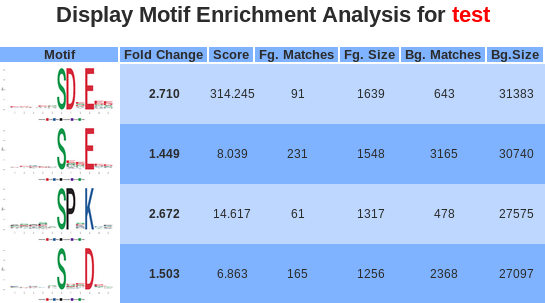- Motif: the logo picture made by ggseqlogo with the over-represented motif. Motif positions are labeled below the x-axis and residues are colored according to their chemical and physical properties.
- Fold change: is an indicator of the enrichment level of the extracted motifs. Specifically, it is calculated as (foreground matches/foreground size)/(background matches/background size).
- Score: The “motif score” is calculated by taking the sum of the negative log probabilities used to fix each position of the motif. As such, higher motif scores typically correspond to motifs that are more statistically significant as well as more specific (i.e., greater number of fixed positions).
- Fg. matches / Bg. matches: indicate the number of peptides containing a given motif in those respective data sets following the removal of all peptides containing previously extracted motifs. Because of this iterative “set reduction” strategy, the “foreground matches” and “background matches” statistics may be less than or equal to the total number of instances of a given motif in the whole data set.
- Fg. size / Bg. size: indicate the total number of peptides contained in these data sets. The size of these data sets decreases as motifs are extracted (i.e., down a column) due to the fact that peptides are removed from both the foreground and background data sets following motif extraction. The total number of foreground peptides not falling into any extracted motif class can therefore be calculated as the difference between the “foreground size” and the “foreground matches” of the final motif class (e.g., 163 – 32 = 131 unclassified peptides in Figure 5). The “fold increase” statistic is an indicator of the enrichment level of the extracted.
Clicking on either the links in the motif logo, brings users to the peptide data used to extract the given motifs. As such, the number of peptides found for each motif in this section corresponds exactly to the number of “foreground matches” for the motif in appropriate column of the results table.
Heatmap motif analysis¶
Launch HM motif analysis
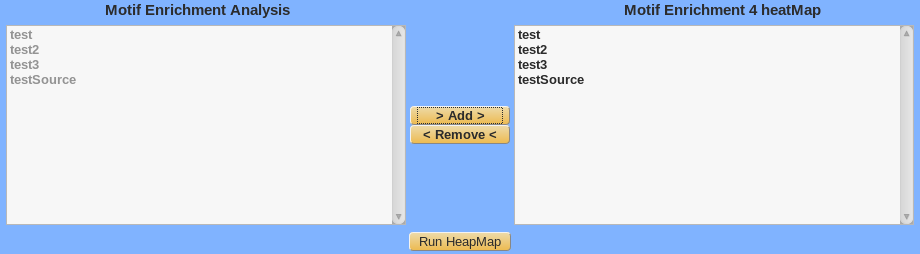Select the previously saved motif analysis in the left panel, click on the Add button and the selected analysis are moved in the right panel to be cluster.
Summary / Edit / Delete
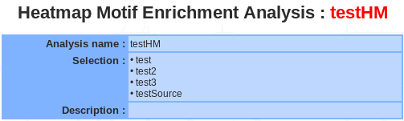<to be completed>
Display Heatmap motif analysis
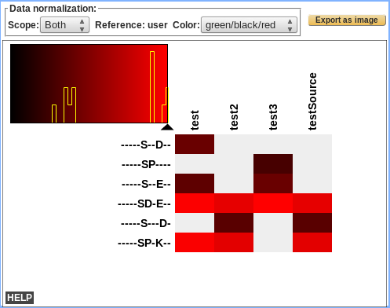<to be completed>